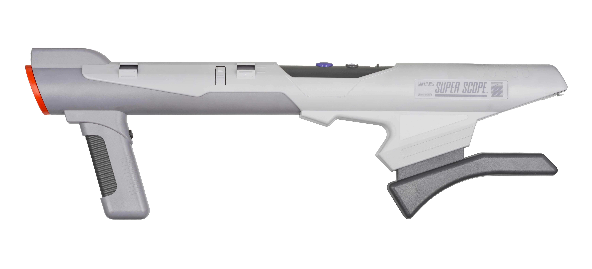
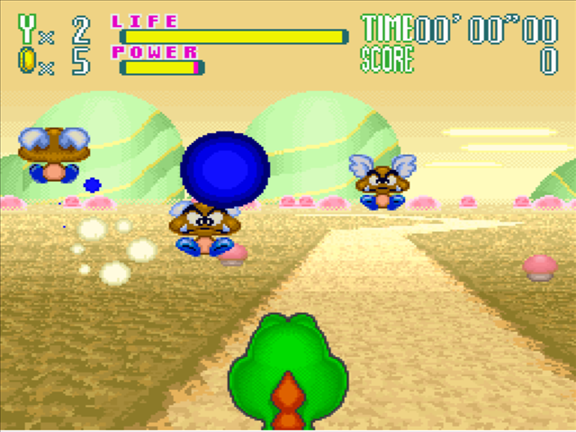
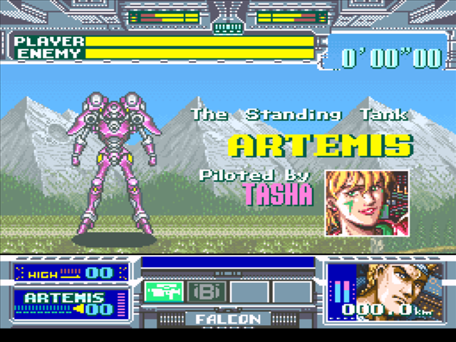
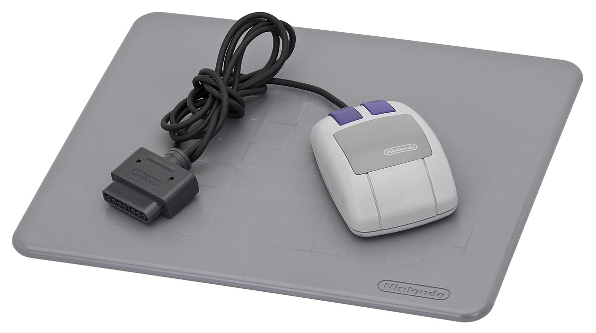
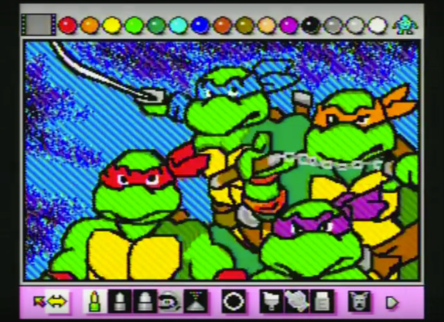
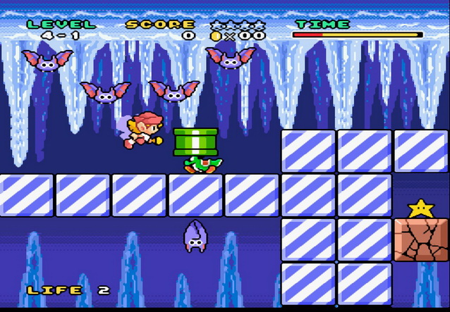
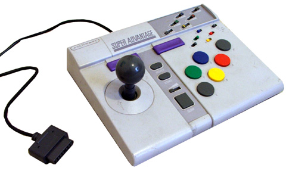

SNES Peripherals
One of the advantages of going the real hardware route is the option to play around with some of the SNES unique accessories. There's a wide range of third party controllers and oddball accessories, and we'll look at some of the most interesting examples here!
The Super Scope
The Super Scope was remarkably light and hollow. It was powered by 6 AA batteries and a reciever that plugs into the SNES controller port
The Super Scope is probably the most interesting SNES accessory. The NES famously came bundled with the NES zapper, a lightgun used for shooting gallery type games. The SNES then, had to one up the NES, and did so with this slightly bizarre bazooka shaped gun! As with all light guns, including the Sega Justifier, Nintendo zapper and Playstation GunCon, these controllers require CRT tvs to work, so don't expect the Super Scope to work with your fancy new 4ktv! If you do happen to have a decent quality CRT tv lying around however, it's quite an interesting toy! There are only two games for it, and neither are exactly must have titles, but very interesting collecter's items nonetheless. Yoshi's Safari is probably the more interesting title. Basically you ride on Yoshi's back as he walks around mode 7 Mario Kart style landscapes blasting at goombas, koopas and other Mario staple enemies. You have to be careful not to shoot Yoshi, and can occasionally change routes. There were a handful of other interesting Super Scope games, incluing the pack in Super Scope 6, a minigame collection, Battle Clash, a one on one mech brawler, and T2 The Arcade game, a home port of the Terminator 2 light gun game.
Definitely the pick of the bunch for the Super Scope's limited library
SNES Mouse
The SNES mouse used old fashioned roller ball technology rather than the lazers of todays mice
The SNES mouse saw extrremely limited use over the SNES lifetime. The most notable game which used it was Mario Paint, a simple drawing application, which unfortunately didn't let you save your works of art. Mario Paint was perhaps more famous for it's music creation application, a surpringly comprehensive music creation tool in which some fantastcally complex peices of music have been created utilizing the SNES sound chip and some cute Mario themes sound effects! The other main titke of note to use the SNES mouse was Mario and Wario, a game in which Wario drops various objects on Mario's head. Rather than doing the sensible thing and removing the object obscuring his vision, the helpless Mario wanders in to the path of various obstables and hazards. The player must use the mouse to create a safe path for Mario in a manner not unlike the Psygnosis classic Lemmings. Thr DS or 3DS would have been a great platform to revive the concept with it's stylus controls, but now with the switch to capactive touch screens, it seems likely that the SNES will remain the sole home for this curiosity!
Quite a limited paint tool by today's standards, Mario Paint is probably better known for it's music creation tools
By far the most substantial game based around the SNES mouse, Mario & Wario is unfornately Japan only, but quite import friendly
the SNES Super Advantage
For fighting game purists, there is only one true way to play - a real arcade stick, with clicky microswitch buttons and directional stick. To the casual player, it may not matter, but hardcore fighting game players (some would say snobs) wear that it is the only way to play. While I don't necessarily agree with that statement, a genuine arcade stick is a very fun way to play, and let's be honest, hitting that L button to do finish up a shoryuken in Street Fighter 2 never felt quite right, did it? By far the best arcade stick for the SNES was the SNES Super Advantage. Their NES advantage arcade style stick for the NES was well regarded, though the system had no real fighting games to take advantage of it. With the coming of Street Fighter 2 however, the desire for real arcade experiences at home was at its peak. The SNES advantage was one of the best arcade sticks for the SNES.
